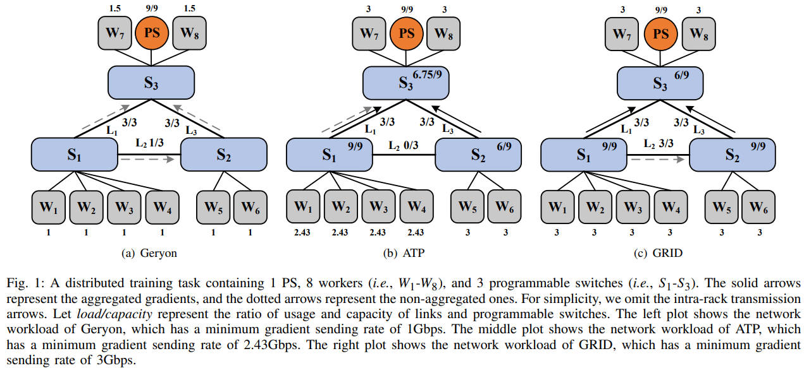

Submitted to JSAC (2022.4.17).
JSAC: (Rejected) Scores 4 4 4 6 3 3.
As the scale of distributed model training increases, it brings huge communication overhead in clusters. Some works try to reduce the communication cost through gradient compression or communication scheduling. However, these methods either downgrade the training accuracy or do not reduce the total transmission amount. One promising approach, called in-network aggregation, is proposed to mitigate the bandwidth bottleneck in clusters by aggregating gradients on programmable hardware (e.g. , Intel Tofino switches). However, existing solutions mainly implement in-network aggregation through fixed (or default) paths, resulting in long communication time. To deal with this issue, we propose GRID, the first-of-its-kind work on gradient routing with in-network aggregation for distributed model training. In the control plane, we present an efficient gradient routing algorithm based on randomized rounding and formally analyze the approximation performance. In the data plane, we realize in-network aggregation by carefully designing the logic of workers and programmable switches. We implement GRID and evaluate its performance on a small-scale testbed consisting of 3 Intel Tofino switches and 9 commodity servers. With a combination of testbed experiments and large-scale simulations, we show that GRID can reduce the communication time by 53.1%-67.6% and speed up distributed model training by 27.6%-46.5% compared with state-of-the-art solutions.

Consider a distributed training task containing 1 PS and 8 workers. Each link has a bandwidth of 3Gbps. Note that, in practice, the ingress bandwidth of the PS is often larger than that of workers to avoid the communication bottleneck, so we set the ingress bandwidth of the PS to 9Gbps. The processing capacity of programmable switches is 9Gbps.
Since the PS needs to wait for gradients of all workers to perform global aggregation, we take the minimum gradient sending rate as the critical metric, and the results are shown in Fig. 1. The circle represents the PS. The gray squares and blue rectangles represent workers $W_1$ - $W_8$ and programmable switches $S_1$ - $S_3$, respectively. We use load/capacity to denote the ratio of workload and capacity for programmable switches and links. The solid arrows represent the aggregated gradients, and the dotted arrows represent the non-aggregated gradients sent by workers.
We first consider the Geryon scheme, which is a classical flow scheduling scheme in distributed training in Fig. 1. It schedules the gradients through different paths according to resource constraints to avoid network congestion. In this case, Geryon schedules the gradient of $W_4$ through the path $W_4$->$S_1$->$S_2$->$S_3$->$PS$ to avoid congestion in link $L_1$. Accrodingly, the gradients of workers $W_1$-$W_3$ are scheduled through the paths $W_1$->$S_1$->$S_3$->$PS$, $W_2$->$S_1$->$S_3$->$PS$ and $W_3$->$S_1$->$S_3$->$PS$, respectively.
Due to bandwidth constraints of links $L_1$ and $L_3$, workers $W_1$-$W_6$ will send the gradients with the minimum gradient sending rate of 1Gbps.
We then consider a state-of-the-art method with in-network aggregation, named ATP, which performs best-effort aggregation. Each worker chooses the nearest programmable switches for in-network aggregation (\ie , $S_1$ aggregates $W_1$, $W_2$, $W_3$ and $W_4$. $S_2$ aggregates $W_5$ and $W_6$. $S_3$ aggregates $W_7$ and $W_8$). If the processing capacity of the programmable switch is exhausted, it will directly transfer the gradients to the PS. In this case, since the processing capacity of $S_1$ is 9Gbps, $W_1$-$W_4$ can send gradients with the speed of 9/4=2.25Gbps. Moreover, $W_1$-$W_4$ can send gradients with the additional speed of 0.75/4=0.18Gbps to the PS, since link $L_1$ still has 3-2.25=0.75Gbps available bandwidth. These gradients will be aggregated by $S_3$ with available processing capacity. As a result, the minimum gradient sending rate is 2.43Gbps.
distributed machine learning, finished, in-network aggregation, programmable switch — Dec 10, 2021